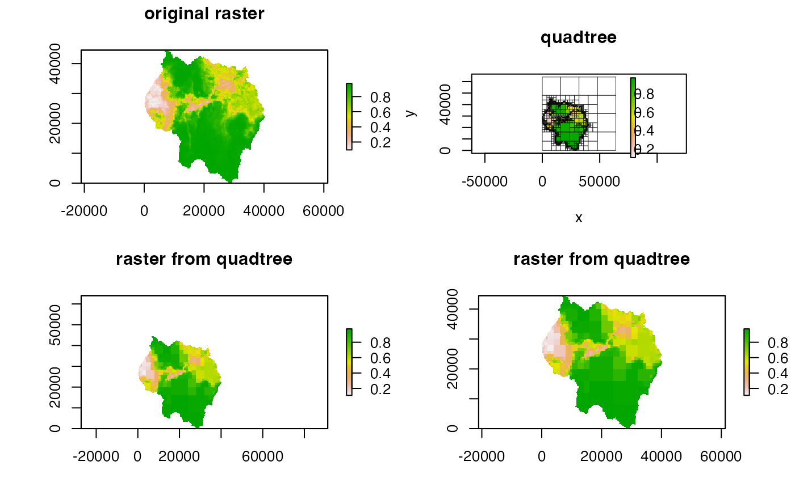

Creates a RasterLayer
from a Quadtree.
# S4 method for Quadtree
as_raster(x, rast = NULL)a Quadtree
a RasterLayer; optional;
this will be used as a template - the output raster will have the same
extent and dimensions as this raster. If NULL (the default), a
raster is automatically created, where the quadtree extent is used as the
raster extent, and the size of smallest cell in the quadtree is used as
the resolution of the raster.
Note that the value of a raster cell is determined by the value of the
quadtree cell located at the centroid of the raster cell - thus, if a raster
cell overlaps several quadtree cells, whichever quadtree cell the centroid of
the raster cell falls in will determine the raster cell's value. If no value
is provided for the rast parameter, the raster's dimensions are
automatically determined from the quadtree in such a way that the cells are
guaranteed to line up with the quadtree cells with no overlap, thus avoiding
the issue.
library(raster)
#> Loading required package: sp
#>
#> Attaching package: ‘raster’
#> The following objects are masked from ‘package:quadtree’:
#>
#> projection, projection<-
library(quadtree)
data(habitat)
# create a quadtree
qt <- quadtree(habitat, split_threshold = .1, split_method = "sd")
rst1 <- as_raster(qt) # use the default raster
rst2 <- as_raster(qt, habitat) # use another raster as a template
old_par <- par(mfrow = c(2, 2))
plot(habitat, main = "original raster")
plot(qt, main = "quadtree")
plot(rst1, main = "raster from quadtree")
plot(rst2, main = "raster from quadtree")

par(old_par)